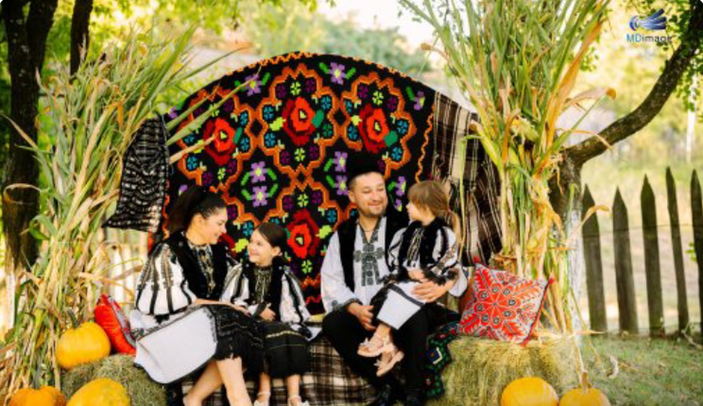

Punct Gastronomic Local · Petrila
Mica Fermămâncare tradițională, gătită ca acasă
O afacere de familie, sus pe deal, deasupra Petrilei. Gătim din ce avem în gospodărie și de la oamenii din zonă, iar meniul se schimbă după sezon.
O afacere de familie, sus pe deal, deasupra Petrilei. Gătim din ce avem în gospodărie și de la oamenii din zonă, iar meniul se schimbă după sezon.
Suntem o familie din Petrila și am deschis porțile casei pentru cei care vor să guste mâncarea adevărată a Văii Jiului, nu cea de restaurant.
Nu avem meniu lung. Gătim puține feluri în fiecare zi, dar le gătim bine, din ingrediente proaspete. Vii la noi ca în vizită: te așezi, te relaxezi și pleci sătul.
Copiii sunt bineveniți, iar locul e liniștit, cu priveliște spre munte.

Rețete de familie, porții mari, fără grabă.
Sus pe deal, departe de zgomotul orașului.
Vii ca musafir, nu ca client. Și cu copiii.
Cât voi stați liniștiți la masă, copiii se joacă în aer liber și fac cunoștință cu animalele fermei.
Spațiu de joacă în curte, la vedere de la mese.
Copiii le pot vedea de aproape. Pentru mulți e prima întâlnire cu o fermă adevărată.
Departe de trafic, sus pe deal, cu loc de alergat.
Aici vor apărea poze cu locul de joacă și cu animalele.
Nota de pe Google, din peste 100 de recenzii, multe de la turiști din străinătate.
Citește recenziile pe Google| Luni | Închis |
| Marți – Vineri | 14:00 – 20:00 |
| Sâmbătă – Duminică | 12:00 – 20:00 |